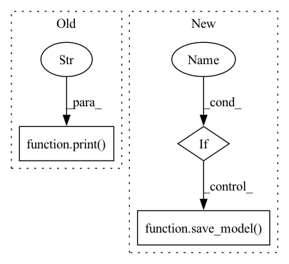

Pattern ID :23037
Before Change
self.optimizer.zero_grad()
tr_loss = tr_loss / nb_tr_steps
print("train_loss" ,tr_loss)
y_true, y_pred, _ = self.get_preds_labels(args, data.eval_dataloader, self.model)
results = clustering_score(y_true, y_pred)
eval_score = results["NMI"]After Change
self.model = best_model
if args.save_model :
save_model( self.model, args.model_output_dir)
def get_outputs(self, args, mode = "eval", get_feats = False):
if mode == "eval":In pattern: SUPERPATTERN
Frequency: 3
Non-data size: 3
Instances Fragment ID: 73040426
Project Name: thuiar/textoir
Commit Name: 203370e17d2a3452b90670171b60c44cb1500bcd
Time: 2021-08-03
Author: zhang-hl20@mails.tsinghua.edu.cn
File Name: open_intent_discovery/methods/semi_supervised/MCL_BERT/manager.py
M Class Name: MCLManager
N Class Name: MCLManager
M Method Name: train(3)
N Method Name: train(3)
M Parent Class:
N Parent Class:
M File Name: open_intent_discovery/methods/semi_supervised/MCL_BERT/manager.py
N File Name: open_intent_discovery/methods/semi_supervised/MCL_BERT/manager.py
M Start Line: 76
M End Line: 111
N Start Line: 37
N End Line: 91
Before Change
nb_tr_steps += 1
loss = tr_loss / nb_tr_steps
print("train_loss" ,loss)
eval_score = self.evaluation(args, data)
print("eval_score", eval_score)
After Change
self.model = best_model
if args.save_model :
pretrained_model_dir = os.path.join(args.method_output_dir, "pretrain")
if not os.path.exists(pretrained_model_dir):
os.makedirs(pretrained_model_dir)
save_model( self.model, pretrained_model_dir)
def get_outputs(self, args, mode = "eval"):
if mode == "eval": Fragment ID: 73040427
Project Name: thuiar/textoir
Commit Name: 4f0068bc25a3a26da045579505b16f4458389c60
Time: 2021-08-02
Author: zhang-hl20@mails.tsinghua.edu.cn
File Name: open_intent_discovery/methods/semi_supervised/KCL_BERT/pretrain.py
M Class Name: PretrainKCLManager
N Class Name: PretrainKCLManager
M Method Name: train(3)
N Method Name: train(3)
M Parent Class:
N Parent Class:
M File Name: open_intent_discovery/methods/semi_supervised/KCL_BERT/pretrain.py
N File Name: open_intent_discovery/methods/semi_supervised/KCL_BERT/pretrain.py
M Start Line: 51
M End Line: 81
N Start Line: 56
N End Line: 113
Before Change
))
// save results
print("saving results..." )
save_log(training_s_statistic, "training_s_statistic.pkl")
save_log(testing_s_statistic, "testing_s_statistic.pkl")
save_log(testing_t_statistic, "testing_t_statistic.pkl")
save_model(model, "checkpoint.tar")After Change
))
// save log results
if args.adapt_domain :
print("saving training with adaptation...")
save_log(training_statistic, "adaptation_training_statistic.pkl")
save_log(testing_s_statistic, "adaptation_testing_s_statistic.pkl")
save_log(testing_t_statistic, "adaptation_testing_t_statistic.pkl")
save_model( model, "adaptation_checkpoint.tar")
else:
print("saving training without adaptation...")
save_log(training_statistic, "no_adaptation_training_statistic.pkl") Fragment ID: 73040425
Project Name: agrija9/deep-unsupervised-domain-adaptation
Commit Name: 81f3ed3b9d549ae9ea6cecfae39471ef6aa6ad0d
Time: 2020-03-13
Author: agrija9@gmail.com
File Name: main.py
M Class Name: AnonimousClass
N Class Name: AnonimousClass
M Method Name: main(0)
N Method Name: main(0)
M Parent Class:
N Parent Class:
M File Name: main.py
N File Name: main.py
M Start Line: 75
M End Line: 150
N Start Line: 38
N End Line: 167